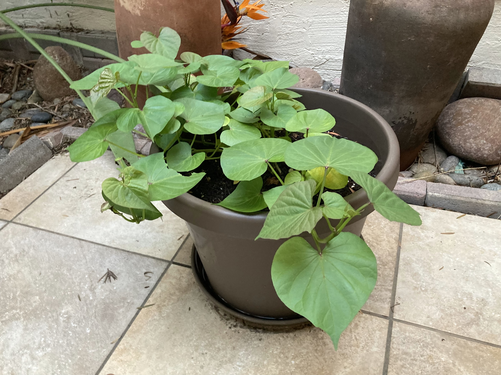
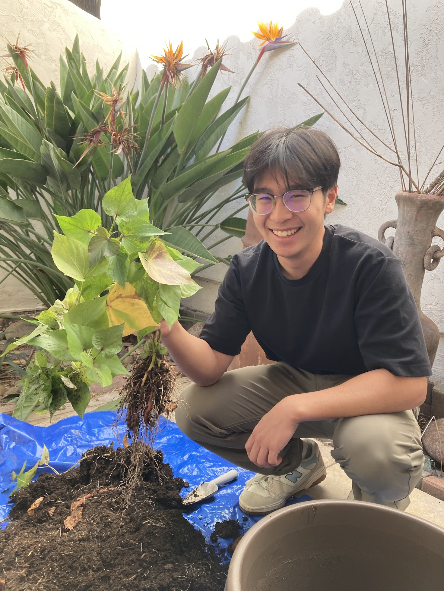
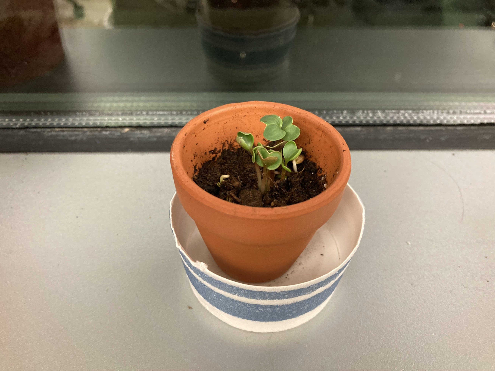

Plant Projects
Plants!
Plant-related photos and growing projects, with space to expand into propagation notes, care experiments, greenhouse updates, and favorite specimens. I have a seasonal relapse into gardening.



1 / 3
Plants
Growth Notes
This page is set up as a dedicated plant gallery. It can grow into a place for propagation notes, care experiments, grow setup iterations, and favorite plant photos.